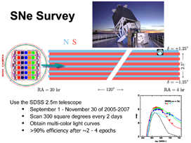
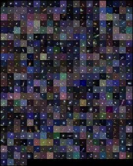

</td>

<!-- Right Nav Bar -->

<td height="100%" width="220" bgcolor="#cccccc" valign="top">


<center>
<table width="200" bgcolor="#CCCCCC" cellspacing="10" cellpadding="5">
    <tr>

	<td>
<a href="../includes/gallery/scanning.png">  </a>
	  <table border="0" cellpadding="2" cellspacing="0" width="272"><tbody><tr>
	    <td class="infoBoxes">
	      Supernova Survey Overview
	    </td>
	  </tr></tbody></table>
	  <br>

	  
     </td>
	  
    </tr>

<tr>
	<td class="newsBox"><strong>SDSS Confirmed Supernovae</strong>
	</td>
      </tr>
    <tr>

	<td>
<a href="../includes/gallery/sn_gallery.200567.x2.oname.jpg">  </a>
	  <table border="0" cellpadding="2" cellspacing="0" width="272"><tbody><tr>
	    <td class="infoBoxes">
	      All Supernovae from the 2005-2007 observing campaigns.
	    </td>
	  </tr></tbody></table>
	  <br>

	  
     </td>
	  
    </tr></tbody></table>
    </td>
<td class="colorborder" width="5"></td>
</tr><tr>
  <td class="footer">&nbsp;</td>
  <td class="colorborder" width="5"></td>
  <td colspan="2" class="footer">&nbsp;&nbsp;Submit your questions to 
  <a href="http://www.lib.uchicago.edu/e/crerar/using/sloan.html">
  the SDSS helpdesk</a>&nbsp;&nbsp;</td>
  <td class="colorborder" width="5"></td>
</tr>

<tr>

<td height="30" bgcolor="#000000" width="132">
&nbsp;
</td>

<td width="100%" height="30" bgcolor="#000000" colspan="2">
<center>
<span class="footer">Submit comments and questions to the
<a href="http://www.lib.uchicago.edu/e/crerar/using/sloan.html" class="footer">
SDSS Helpdesk</a>.
        <!--#config timefmt="%D" -->
        Last updated <!--#echo var="LAST_MODIFIED" -->
</span>
</center>

</td></tr></table>

</body>
</html>

